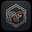

Создадим локальный профиль и добавим Portal в интерфейс устройства.
Разрешение браузера запрашивается только для выбранного адреса.
Профили локальные · статус сети не проверяется
Статус не проверялся
Только по нажатию · локальная проверка /api/health · без логина
Не проверялись
Требуется открытая вкладка Core и вход в неё. Только чтение.
Сначала получи статус модулей